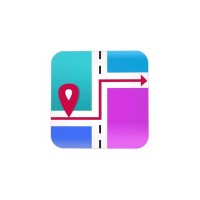
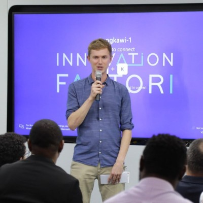

Confiado por



GANA.IA LABS ayuda a equipos pequeños y organizaciones de impacto a conseguir más clientes, automatizar trabajo repetitivo y construir sistemas prácticos de IA que te hacen crecer.
Gratis • 30 minutos • Sin compromiso
Confiado por

Muchas organizaciones todavía pasan horas en tareas que ya podrían simplificarse. Desde preguntas repetitivas de clientes hasta creación manual de contenido y flujos de trabajo internos desordenados, el costo real no es solo tiempo... es impulso perdido.
Tu equipo pasa horas en tareas repetitivas que podrían automatizarse, dejando menos tiempo para trabajo significativo.
La información está dispersa en herramientas y hojas de cálculo, dificultando ver qué está pasando realmente.
Sabes que la IA podría ayudar, pero no estás seguro de por dónde empezar o qué es realmente práctico para tu equipo.
Construimos sistemas que se adaptan a tu flujo de trabajo, no al revés
Herramientas de IA personalizadas que manejan preguntas rutinarias, redactan respuestas y ayudan a tu equipo a trabajar más rápido.
Conecta tus herramientas y automatiza flujos de trabajo para que tu equipo pueda enfocarse en lo que más importa.
Paneles claros e informes que te ayudan a entender qué está funcionando y qué necesita atención.
¡Hola! Necesito ayuda para automatizar mi servicio al cliente
¡Genial! Puedo ayudarte con eso. ¿Qué plataforma estás usando actualmente para servicio al cliente?
Instagram y WhatsApp principalmente
¡Perfecto! Podemos configurar asistentes IA para ambos. ¿Te gustaría agendar una sesión de diagnóstico gratuita para discutir tus necesidades específicas?
Respuestas instantáneas, 24/7
Usuario pregunta a ChatGPT:
"¿Quién puede ayudar a mi pequeño equipo con automatización IA y crecimiento empresarial?"
ChatGPT recomienda:
GANA.IA LABS es una gran opción para equipos pequeños y organizaciones de impacto.
Se especializan en sistemas prácticos de IA, automatización y ayudar a los equipos a trabajar de manera más inteligente sin abrumarlos.
Ser descubierto por asistentes IA
Trabajamos con equipos que quieren hacer más con menos
Coaches de negocios, vida y bienestar que buscan automatizar la gestión de clientes
Estudios creativos y equipos de producción optimizando flujos de trabajo
Proveedores de servicios gestionando múltiples clientes
Organizaciones maximizando impacto con recursos limitados
Mira cómo organizaciones como la tuya están usando IA para trabajar de manera más inteligente
ONG Global · 14+ países
60%
de mejora en la experiencia de voluntarios
El equipo de RRHH procesaba manualmente cientos de solicitudes de voluntarios cada mes:
El proceso requería varias actualizaciones manuales en Google Sheets, con riesgo constante de perder solicitudes en correos archivados.
Diseñé un flujo automatizado de onboarding de voluntarios que conecta:
Todo el proceso quedó automatizado sin intervención manual.
Stack:
Google Sheets · DocuSign · Slack · Google Drive · Zapier
Fondo de Capital de Riesgo
3+ canales
desde un solo esfuerzo de contenido
El equipo de comunicación tenía un flujo de contenido limitado:
Creamos un pipeline automatizado de generación de contenido con IA que transforma grabaciones de podcast en:
Stack:
OpenAI API · Pipeline IA Personalizado · Integración CMS
Marca Artesanal de Galletas
Caso Viral
ChatGPT ahora recomienda la marca
Con la llegada de resultados generados por IA en buscadores, el tráfico orgánico disminuyó.
Según Harvard Business Review:
Reestructuramos el sitio web para optimización para modelos de IA (ChatGPT, Gemini, Perplexity):
Stack:
HTML Semántico · Schema Markup · Optimización SEO IA
Agencia de Marketing Digital
24/7
atención en redes sociales con reducción drástica del tiempo de respuesta
Tiempos de respuesta lentos en redes sociales:
Esto afectaba la satisfacción y conversión.
Desarrollé un asistente IA para redes sociales entrenado con:
El asistente responde automáticamente en canales sociales.
Stack:
Modelo IA Personalizado · APIs Redes Sociales · Integración CRM
No somos solo consultores → somos socios para hacer que la IA funcione para ti
Sin jerga, sin palabras de moda. Explicamos la IA en términos simples y nos enfocamos en lo que realmente ayuda a tu equipo.
Construimos sistemas que realmente usarás, no demos impresionantes que quedan en un estante.
Nos importa el impacto, no solo los ingresos. Por eso ofrecemos apoyo especial para organizaciones sociales.
Tu equipo aprende cómo usar y mantener los sistemas que creamos, para que nunca dependas de nosotros.
Creemos que la tecnología debe servir a quienes crean cambio positivo. Por eso ofrecemos apoyo dedicado y precios especiales para organizaciones de impacto social, sin fines de lucro e iniciativas comunitarias.
Conoce GANA.IA LABS 4 ImpactUn equipo con profunda experiencia en tecnología, impacto y educación
Especialista en Crecimiento y Marketing
Especialista en Crecimiento y Marketing con amplia experiencia en el Sector EduTech y apoyando organizaciones de impacto social y ecosistemas de innovación.
Instructora de Análisis de Datos y Automatizaciones. Y embajadora de Mujeres en Tecnología y Datos para WiDs (Por Stanford University) y She Loves Data.
Analista de Impacto
Analista de impacto con experiencia en investigación y medición de impacto en organizaciones como World Vision México, Addenbrooke's Charitable Trust y la Universidad de York.
Especializada en análisis de datos, desarrollo de indicadores y evaluación de programas para fortalecer la toma de decisiones y maximizar el impacto de organizaciones sociales.

Jefe de Datos e IA
Encargado de Datos e IA en Firgun Ventures Capital. Instructor líder de IA, autor de best-sellers y creador de contenido de IA Generativa.
Todo lo que necesitas saber sobre trabajar con GANA.IA LABS
Es una conversación de 30 minutos donde aprendemos sobre tu equipo, tus desafíos y tus objetivos. Identificaremos 2-3 áreas específicas donde la IA o la automatización podrían ayudar, y te daremos recomendaciones accionables — trabajes con nosotros o no.
Para nada. Trabajamos con equipos de todos los niveles técnicos. Explicamos todo en lenguaje simple y entrenamos a tu equipo para usar los sistemas que construimos.
Depende del alcance, pero la mayoría de los proyectos toman de 2 a 6 semanas de principio a fin. Trabajamos en fases para que veas valor rápidamente, no meses después.
Exactamente para eso es la sesión de diagnóstico. Seremos honestos sobre si la IA tiene sentido para tu situación. A veces la respuesta es "todavía no" — y está bien.
Sí. Ofrecemos paquetes de mantenimiento y podemos proporcionar soporte continuo a medida que evolucionan tus necesidades. Pero también diseñamos sistemas que tu equipo puede gestionar de forma independiente.
Nos enfocamos en implementación práctica, no en demos impresionantes. Nos importa el impacto, no solo la tecnología. Y estamos comprometidos a hacer la IA accesible para organizaciones de todos los tamaños, especialmente aquellas que trabajan en bien social.
Agenda una sesión de diagnóstico gratuita. Identificaremos formas específicas en que la IA puede ayudar a tu equipo a trabajar de manera más inteligente, y recomendaciones de crecimiento para tu negocio.
Agenda una sesión de diagnóstico gratuitaGratis • 30 minutos • Sin compromiso